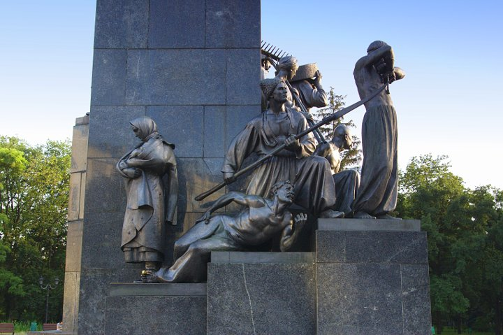

Памятник Тарасу Григорьевичу Шевченко в Харькове — памятник украинскому поэту, писателю,
художнику и
мыслителю Тарасу Григорьевичу Шевченко является одним из символов города Харькова. Монумент расположен в
центре Харькова — в Саду имени Т. Г. Шевченко,
при входе на центральную аллею со стороны улицы Сумской. Памятник органически связан с окружающим парковым
пейзажем и городским архитектурным ансамблем. Общая высота монумента — свыше 16 метров, высота статуи Тараса
Шевченко — 4,5 метров. Художественный стиль монумента можно определить как соцреализм и сталинское барокко,
тогда как трактование личности Тараса Шевченко так же является советским — как идейного борца за счастье
простого народа, поэта-революционера. Авторы памятника — советский скульптор Матвей Манизер и архитектор
Иосиф Лангбард. Монумент был торжественно открыт 24 марта 1935 года, то есть через 9 месяцев после того, как
Харьков перестал быть столицей УССР.
Памятник Тарасу Шевченко представляет собой многоплановую композицию, каждая из частей которой
просматривается постепенно, по мере знакомства с монументом, вместе с тем, весь памятник воспринимается как
единое целое. Многоступенчатость монумента была (и остается) органично связанной с архитектурой
величественных сооружений Госпрома и Харьковского государственного университета (сейчас Харьковский
национальный университет имени В. Н. Каразина), Садом имени Т. Г. Шевченко. Фасад памятника повёрнут к
центральной магистрали города — улице Сумской. В плане монумент представляет собой своеобразную
архитектурную спираль с 11- метровым трехгранным пилоном с фигурой Тараса Шевченко внутри и выступлениями по
кругу, которые окружают пилон, и на которые разместились 16 динамических статуй — высокохудожественных
образцов советской пропаганды, которые по замыслу автора проекта должны были символизировать людей работы и
их борьбу за свои права против притеснителей — от непокорных, бунтарских образов из произведений Т. Г.
Шевченко к участникам русской революции 1905—1907 лет и Октябрьской революции 1917 года, а величественная
группа, которая состоит из рабочего-шахтера, колхозника, красноармейца и женщины, является олицетворением
тогдашней современности.
Доминантой монумента является фигура Кобзаря — Шевченко высотой 4,5 м, установленная на высоком
постаменте
из серого (на момент сооружения ярко-черного) лабрадорита. Статуя полна динамики — и в точно найденном
ракурсе слегка наклонённой набок головы, и в энергичном жесте правой руки, и во всей фигуре Шевченко
просматривается готовность к действию, целенаправленность, внутренняя напряженность, что в полной мере
соответствовало советской трактовке образа Т. Г. Шевченко как поэта и художника-революцтонера. Скульптура
имеет ярко выраженный силуэт, легко узнаваемый издали, что сближает общий фон монумента с конструктивизмом,
— суровые, укрупненные складки одежды, лаконичность форм, энергичная обработка поверхности большими
обобщенными плоскостями — все это призвано создать могущественный образ непокоренного борца за права
трудящихся. К детализации автор прибегат лишь в разработке лица, которое осуществлено не только для
достижения портретной схожести, а и раскрытие внутреннего мира, в русле трактования личности поэта,
выявление твердости и силы духа поэта-борца. Именно поэтому взгляд монументального Кобзаря суровый и
гневный, а вычеканенные на голове морщины означают горечь пережитого-передуманого. Целостности образа автор
достигает проработкой и других деталей — например, крепко сжатой в кулак (гневный жест) рукой.
Фигуры, которые окружают пьедестал, — вдвое меньше по высоте, чем статуя Шевченко. Они воспринимаются в
основном вблизи. По замыслу скульптора>, осуществлять обзор фигур нужно в последовательности
композиционной
спирали, начиная от фигуры «Катерина» и двигаясь против часовой стрелки.

Среди статуй монументального ансамбля, связанных идейно общим замыслом отображения воспетой Кобзарем
борьбы
народа за свою волю, можно выделить отдельные фигуры и композиции:
Cкульптура «Катерина» — статуя крепостной с грудным ребенком на руках, известная под
названием
«Катерина»,
воспетая Т. Г. Шевченко в одноименной поэме; воплощение образа женщины-матери под бременем одиночества и
кручины;
Первая композиция («Умирающий гайдамак. Гайдамак с косой. Рвущий путы.») — все три
фигуры связаны
как идейно,
так и сюжетно — за общей привязкой композиции к поэме Т. Г. Шевченко «Гайдамаки» о событиях колеевщины
кроется жизнеутверждающее убеждение в несокрушимости народного духа и вера в его победу; скульптура
«Связанный запорожец» — одна из статуй, которые передабт патриотичный, многогранный характер героя,
воплощает народную силу и величие, скорбь и боль;
Вторая композиция («Женщина-крестьянка. Несущий жернова. Солдат-рекрут.») — в
образах представителей разных прослоек трудовой народ воплощает идею страданий украинцев из-за царизма;
Третья композиция («Рабочий с преклоненным флагом. Студент. Рабочий с винтовкой. Матрос.
Красноармеец.») — 3-
статуи
композиции изображают образы восставшего народа во время социальных катаклизмов первых десятилетий ХХ
столетие.
Четвертая композиция («Крестьянин. Шахтер. Женщина с книгой») — фигуры этой последней группы, по замыслу
автора,
должны были передавать те изменения, которые произошли в советском обществе.
Автор монумента достиг пластического единства, гармонии, согласованности всех его групп и фигур. Им
присущи классические пропорции, тщательная продуманность поз и жестов, которые отображают особенности
характеров и вместе с тем оказывают содействие раскрытию единства композиционного замысла. Многофигурная
композиция выдержана в эпически спокойном, но приподнятом ритме. Материал статуй — тёмная бронза на фоне
постамента из отполированного до зеркального блеска лабрадорита предоставляет памятнику еще большей
торжественности, выразительности и величия.
Харьков известен как город, где был установлен один из первых на Украине памятников Тарасу Шевченко.
Инициаторами создания первого памятника Шевченко в Харькове была семья Алчевских. В 1897 году Алексей
Кириллович Алчевский заказал в Петербурге известному академику, профессору Петербургской
Академии
искусств В. А. Беклемишеву, выходцу из Харькова, бюст Кобзаря из белого мрамора. В 1898 году бюст был
установлен возле усадьбы известной просветительницы, основательницы женской воскресной школы для взрослых
Христины Алчевской (на улице Садово-Куликовськой, сейчас Совнаркомовская). Осуществлено это было
нелегально — без разрешения царской власти. В трактовании Беклемишева Т. Г. Шевченко был философом и
борцом, готовым к решительным активным действиям. Возле этого памятника часто собиралась студенческая
молодежь, воспитанники воскресной школы. В 1901 году, накануне сороколетия со дня смерти Т. Г. Шевченко
памятник был снят. По другой версией, тогда же, во время экономического кризиса А. К. Алчевский
обанкротился и наложил на себя руки, семьи пришлось срочно избавиться от шикарного особняка — усадьбу
продали купцу Шабельському, и когда новый собственник хотел было уничтожить бюст Кобзаря, Алчевськие
забрали его с собой и еще на протяжении двадцати лет сохраняли в семье. В 1932 году Николай Алексеевич
Алчевский, преподаватель юридического института, передал бюст в Картинную галерею Т. Г. Шевченко и сейчас
этот экспонат находится в Киеве в государственном музее поэта.
Уже при советской власти, в июле 1919 года, на месте памятника Александру ІІ установили временный
гипсовый бюст Т. Г. Шевченко, изготовленный по проекту скульптора Б. Кратка. Этот бюст сняли с постамента
деникинцы, и дальнейшая его судьба неизвестна.
2 июня 1929 года Харьковский горсовет утвердил постановление о сооружении памятника. В 1930 году был
объявлен первый международный конкурс на сооружение памятника Тарасу Шевченко в Харькове. Таких конкурсов
на протяжении 1930—1933 лет в общей сложности было три. Проблематика этих конкурсов в советской
литературе или не освещается вообще, или исключительно с акцентом на участие в них победителей Манизера и
Лангбарда. 22 сентября 1933 года открылась выставка проектов, на которой было представлено 30 работ
ведущих мастеров того времени — Ф. Кричевского, С. Меркурова, М. Манизера, И. Кавалеридзе и других.
Противоречивой темой остается определение победителей конкурса, так как среди лучших по результатам
сентябрьской выставки фигурировал и общий проект украинского художника Федора Кричевського и русского
скульптора Сергея Меркурова, а уже на дополнительном, ноябрьском, обзоре, где рассматривались
доработанные проекты, победителем была признана работа Матвея Манизера. Одним из претендентов на место
скульптора данного памятника также была В. И. Мухина. Сохранилась её объяснительная записка:
Шевченко представлен бронзовой статуей, стоящей на девятиметровом каменном пьедестале
(ногами он стоит
еще в каменной среде, но дух его железный), с поступью твердой и энергичной, в полном сознании своего
человеческого достоинства, народный трибун и пробудитель сознания в те годы угнетения. Автор дает его в
украинской одежде, так как с образом Шевченко связывается представление о пробуждении Украины, и
интеллигентский сюртук как дань моде середины XIX столетия с образом великого Тараса не вяжется и кажется
совершенно нелепым. Одежда, присущая народу, становится его историческим признаком, понятным в веках, в
противовес моде, через одно-два десятилетия кажущейся смешной. В нижней части памятника автор дает
олицетворение старой и новой Украины. Старая Украина, угнетенная, батрацкая, подъяремная, в образе двух
волов под ярмом, понурых и забитых. Сзади их на врезном барельефе украинский батрак, темный и изнуренный
под игом крепостничества, окаменелый от вековых страданий. Эта группа символически дана в камне. Возле, с
другой стороны стоит группа современных украинцев, работников и крестьянок, бодро смотрящих вдаль, дружно
взявшись за руки для коллективной работы, окружив колесо трактора, — символ и фактор объединения
работающего и потребляющего на всеобщей социальной стройке УССР…
Матвей Манизер, к тому времени был состоявшимся мастером-творцом ряда значительных монументов,
приверженецем реалистического искусства. Сохранились свидетельства, согласно которым, работая над
проектом, скульптор путешествовал шевченковскими местами, делал большое количество пейзажных и жанровых
этюдов, тщательно изучал внешность и личность Т. Г. Шевченко — по его произведениям, перепискам и
мемуарами о нем, автопортретами, немногочисленными фотографиями, посмертной маской и т. п.. Творческие
поиски Манизера были продолжительными. Первый проект памятника (1930 год) он выполнил в
конструктивистской манере — большая по размеру голова Шевченко с выражением опечаленности была
установлена на цилиндрическом постаменте с барельефом повстанца, который, стоя на коленях, гневно
потрясал кандалами. Во втором проекте (1931 год) М. Г. Манизер расположил статую поэта на пьедестале с
низким рельефом, на котором были изображены персонажи из произведений Кобзаря. И лишь третий вариант
проекта (1933 год) принес скульптору творческое удовлетворение и победу во всесоюзном конкурсе, и это при
потому, что в конкурсе принимали участие немало выдающихся скульпторов своего времени.
Матвею Манизеру позировали актеры харьковского театра «Березиль»: